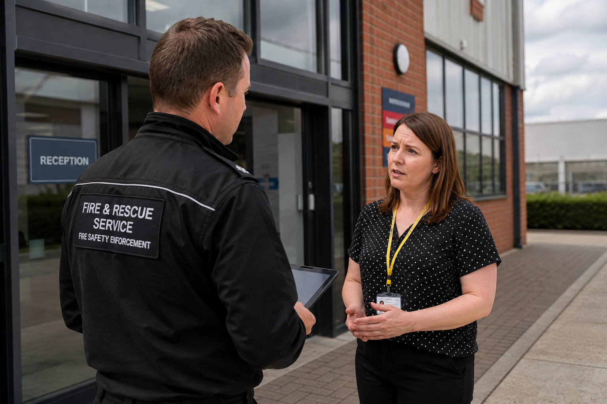
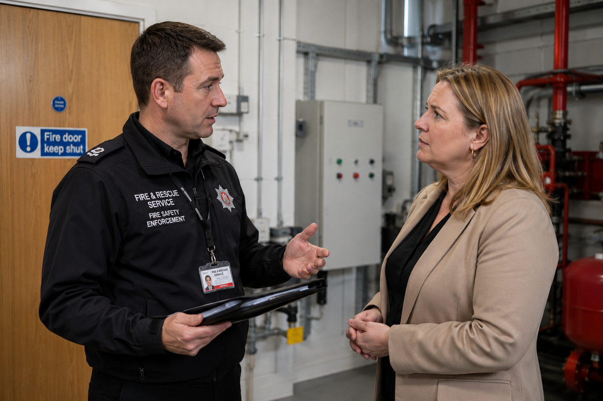
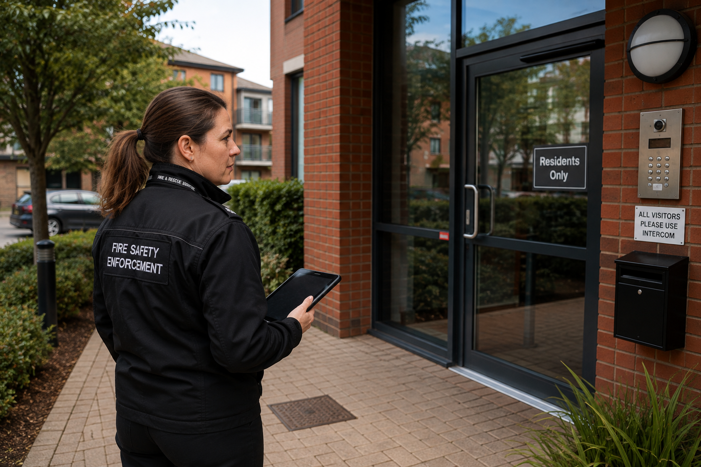

Prepare your officers for the conversation that follows the decision.
Conflict management and personal safety training for fire safety, enforcement and prevention professionals — helping people recognise risk, reduce escalation and manage challenging behaviour safely and professionally without compromising their regulatory responsibilities.

When regulatory conversations become difficult.
Fire safety and enforcement officers work with dutyholders across commercial, public, residential and higher-risk premises. Most interactions are constructive. Some become challenging when findings affect cost, access, reputation, accommodation or the continued use of premises.
Challenge and resistance
A business owner, landlord, responsible person or resident may become defensive, dismissive, distressed or hostile when they disagree with findings or proposed action.
Changing personal risk
Lone and joint visits can change quickly. Officers need awareness of behaviour, environment, positioning, exits and available support.
Professional accountability
Officers must balance an advisory and enabling approach with proportionate, evidence-based regulatory decisions — even when under pressure.
Prepare for the interaction around the decision.
Maybo training complements professional and regulatory expertise by focusing on the human interaction and personal-safety risks surrounding inspection and enforcement activity.
Recognise escalation earlier
Notice changes in behaviour, potential triggers and emerging warning signs before situations become harder to manage.
Communicate difficult messages
Explain findings, expectations and consequences clearly while reducing unnecessary confrontation.
Assess risk dynamically
Consider the person, behaviour, environment and changing circumstances when deciding what to do next.
Maintain boundaries
Remain calm and assertive without becoming drawn into argument, confrontation or inappropriate negotiation.
Protect personal safety
Consider safer positioning, exits, environmental risk and options for creating distance or disengaging.
Know when to withdraw
Recognise when continuing is no longer safe or productive and when colleague or police support may be needed.
Built around situations officers may actually encounter.
Role-relevant discussion and scenarios help people translate principles into decisions they can use during real visits and conversations.
The challenging business owner
An owner becomes increasingly angry after an inspection identifies significant remedial work.
The distressed resident
A resident becomes anxious or confrontational during a building visit.
The disputed decision
An individual strongly challenges findings and repeatedly attempts to draw the officer into argument.
Obstruction or refusal
An officer encounters resistance when attempting to access premises or progress their duties.
Group escalation
Other people become involved and the behaviour and dynamics of the group begin to change.
The visit that no longer feels safe
The officer must decide whether to continue, reposition, seek assistance or withdraw.
Match capability to role and risk.
Not every employee faces the same exposure. Maybo can combine digital learning and practical trainer-led development according to role, operational context and assessed risk.
A combination of conflict-risk prevention, de-escalation and lone-working learning can provide a strong foundation for enforcement and inspection roles, with practical personal-safety content added where the risk assessment supports it.
Digital, trainer-led or blended.
The learning approach can be configured around operational requirements, workforce scale and the level of practical application needed.


Confidence without complacency.
The goal is not to make difficult interactions disappear. It is to help officers respond more consistently and make safer, more proportionate choices when challenge or resistance occurs.
Technical competence tells an officer what needs to happen.
The evolving fire and building safety framework places greater emphasis on accountability, information sharing, resident engagement and demonstrable compliance.
Behind those processes are conversations — with the business owner facing unexpected expenditure, the landlord disputing the next step, or the resident worried about what an issue means for their home.
Maybo helps prepare officers for the interaction that happens next.
Build the right training around your people and risk.
You may already have conflict-management provision in place. Or recent incidents, staff feedback or changing responsibilities may have prompted a review.
The starting point doesn't have to be buying a course. Talk to Maybo about the roles, situations and behaviours your teams encounter and we can explore a proportionate training pathway.
- Roles and teams in scope
- Typical inspection and enforcement interactions
- Lone-working and personal-safety exposure
- Existing learning and identified gaps
- Delivery model and workforce scale
- Local procedures and scenarios to reflect